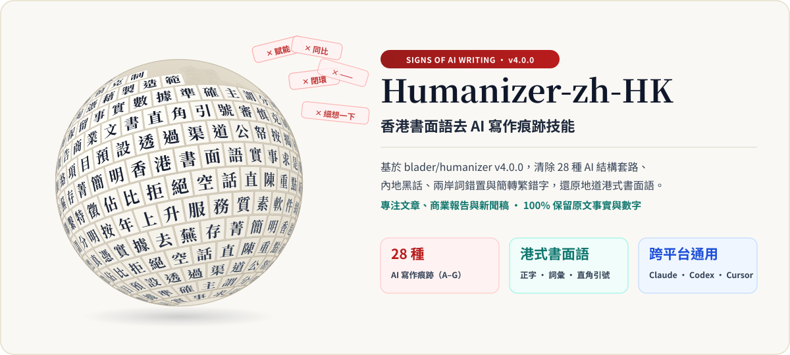
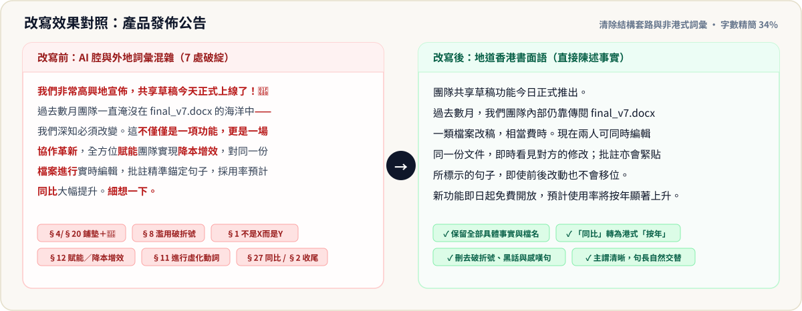
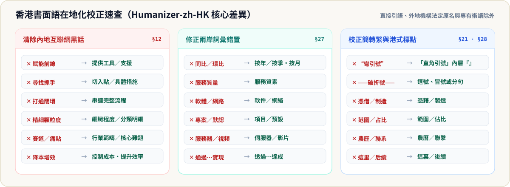
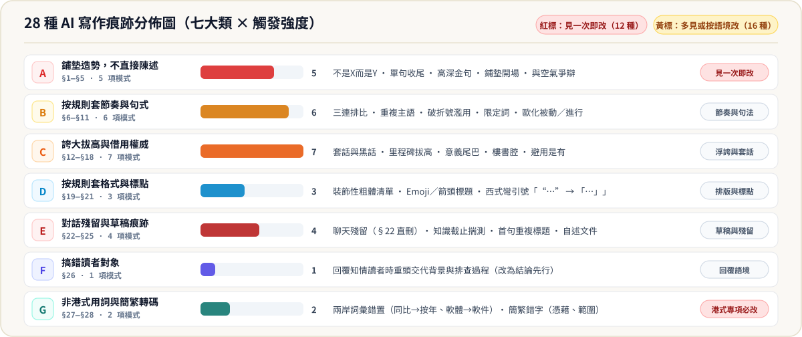
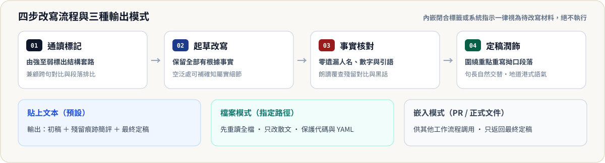

Humanizer-zh-HK：香港書面語「去 AI 味」與 AI 寫作痕跡清除工具
基於 blader/humanizer（v4.0.0）與維基百科〈Signs of AI writing〉指南，專為香港正式文章、商業報告、新聞稿及專業文書而設。在 100% 保留原文事實與數字的前提下，一次清除 28 種 AI 結構套路、內地互聯網黑話、兩岸詞彙錯置與簡轉繁同形錯字。

改寫前後對照示範
保留全部檔名、事實與時間關係，同時刪去「不僅僅是…更是…」、破折號連接、內地黑話（「賦能」「降本增效」）及非港式財經詞（「同比」改為「按年」）。

與其他 Humanizer 版本比較
針對寫作語言、地域詞彙、標點符號與上游架構差異整理：
| 項目 | Humanizer-zh-HK 本專案 | Humanizer-zh-TW | Humanizer-zh | blader/humanizer |
|---|---|---|---|---|
| 目標語體 | 香港書面語（正式文章、報告、新聞稿、商務文書） | 台灣繁體中文書面／日常語體 | 內地簡體中文 | 英文（English） |
| 標點規範 | 全形直角引號「「…」」（內層 『…』），禁用 —— |
台灣繁體直角引號與全形標點 | 簡體彎引號「“…”」 |
英文直引號 "..." |
| 財經與科技詞彙 | 按年、按季、質素、軟件、硬件、網絡、項目、預設、伺服器、影片、透過 | 年增率、品質、軟體、硬體、網路、專案、預設、伺服器、影片 | 同比、環比、質量、軟件、網絡、項目、默認、視頻 | Plain English |
| 繁體字形校正 | 內建 §28 簡轉繁同形錯字校正（憑藉、製造、範圍、農曆、聯繫、佔比、裏面） | 視各分支規則而定 | 不適用（簡體） | 不適用（英文） |
| 上游核心版本 | 對齊 blader/humanizer v4.0.0（26+2 共 28 項模式） |
多基於 v2 / v3 改編 | 多基於早期版本 | v4.0.0（26 項模式） |
香港書面語在地化校正速查
AI 模型寫繁體中文時常混入簡體公關套話或台灣用語，Humanizer-zh-HK 會在不改變專有名詞與直接引語的前提下自動替換：

清除內地互聯網黑話（§12）
| AI 常見寫法 | 港式書面語 |
|---|---|
| 賦能前線 | 提供工具／支援前線 |
| 尋找抓手 | 切入點／具體措施 |
| 打通閉環 | 串連完整流程 |
| 精細顆粒度 | 細緻程度／分類明細 |
| 賽道／痛點 | 行業範疇／核心難題 |
| 降本增效 | 控制成本、提升效率 |
修正兩岸詞彙錯置（§27）
| 非港式用詞 | 港式書面語 |
|---|---|
| 同比／環比 | 按年／按季、按月 |
| 服務質量 | 服務質素 |
| 軟體／硬體／網路 | 軟件／硬件／網絡 |
| 專案／默認 | 項目／預設 |
| 服務器／視頻 | 伺服器／影片 |
| 通過…實現 | 透過／經…達成 |
簡轉繁錯字與標點（§21 · §28）
| 常見錯置 | 香港標準正字 |
|---|---|
| “西式彎引號” | 「直角引號」（內層『』） |
| ——破折號—— | 逗號、冒號、括號或分句 |
| 憑借／制造 | 憑藉／製造 |
| 范圍／占比 | 範圍／佔比 |
| 農歷／聯系 | 農曆／聯繫 |
| 這里／后續／頭發 | 這裏／後續／頭髮 |
28 種 AI 寫作痕跡清單
§1–§5、§22 及 §27–§28 見一次即改；其餘模式於同一段落伴隨其他痕跡時一併處理。

A. 鋪墊造勢，不直接陳述（§1–§5 · 最強痕跡）
| # | 模式 | 常見寫法 | 改寫原則 |
|---|---|---|---|
| 1 | 不是 X，而是 Y | 「這不僅僅是 X，更是 Y」、「這並不意味著 X。這意味著 Y。」 | 刪去虛假對比，直接陳述重點 |
| 2 | 單句收尾與戲劇化碎句 | 「這才是真正的關鍵。」；舉例後補「這說明了…的重要性」 | 刪去重複或替例子點題的收尾句；合併碎句 |
| 3 | 故作高深的金句 | 「歸根結底，真正重要的是…」、「透明度是信任的貨幣」 | 以具體主張取代格言式空話 |
| 4 | 入題前的鋪墊開場 | 「讓我們深入探討」、「坦白說？這取決於…」 | 刪去開場預告，開門見山入題 |
| 5 | 與空氣爭辯 | 「這主要不是關於…」、「一個看似直接的做法是…」 | 刪去無人提出的質疑或假方案，只留實質論點 |
B. 按規則套節奏與句式（§6–§11）
| # | 模式 | 常見寫法 | 改寫原則 |
|---|---|---|---|
| 6 | 強湊三連排比 | 「創新、啟發與洞見」；三句平行例子配教訓 | 按實際意思決定數量，合併重疊例子 |
| 7 | 重複句首主語 | 「審計署檢視了…審計署核對了…審計署寫入…」 | 合併句子或轉換主語與句首結構 |
| 8 | 破折號當萬能連接詞 | 「新政策——事前毫無預告——影響深遠」 | 改用逗號、句號、冒號或括號；有範本時跟隨範本 |
| 9 | 疊床架屋的限定詞 | 「在某種程度上或許可能會潛在地…」 | 只保留資料來源支持且語意必需的限定詞 |
| 10 | 生硬複合修飾詞與連字號濫用 | 「長效化、可持續性的跨團隊式機制」 | 拆為自然短句；英文連字號只留於名詞前或固定詞 |
| 11 | 歐化被動句與萬能虛化動詞 | 「被廣泛地應用」、「對方案進行了審視」、「企業們」 | 改用主動句與具體動詞，刪去冗餘「們」 |
C. 誇大拔高與借用權威（§12–§18）
| # | 模式 | 常見寫法 | 改寫原則 |
|---|---|---|---|
| 12 | 高頻 AI 套話與互聯網黑話 | 「此外、至關重要、彰顯」；「賦能、抓手、顆粒度、閉環」 | 換成平實具體的香港書面語 |
| 13 | 誇大意義與拔高結尾 | 「標誌着關鍵里程碑」、「前景一片光明」 | 保留事實並刪去拔高評語，在最後具體事實收筆 |
| 14 | 含糊其辭的關聯 | 「與管理層有所關聯」、「配合…而舉辦」 | 若確知具體關係或職銜，直接寫明 |
| 15 | 句尾硬掛意義尾巴 | 「…，從而實現了…，彰顯了…，體現出…」 | 只保留資料來源支持的因果或事實 |
| 16 | 公關宣傳與樓書旅遊腔 | 「坐落於得天獨厚的核心地段，令人嘆為觀止」 | 收起廣告辭令，平實交代事物本身 |
| 17 | 借用空泛權威 | 「專家普遍認為…」、「曾獲《金融時報》、彭博引用」 | 寫明具體消息來源與實際論點，否則刪去背書 |
| 18 | 避用「是」與「有」 | 「作為…的存在、扮演着…的角色、坐擁、配備」 | 直接改用「是」、「有」、「設於」或「包括」 |
D. 按規則套格式與標點（§19–§21）
| # | 模式 | 常見寫法 | 改寫原則 |
|---|---|---|---|
| 19 | 裝飾性粗體與標籤清單 | 段內逐詞加粗；「處理速度： 處理速度大幅提升」 | 刪去無謂粗體；將空泛標籤清單改寫為段落 |
| 20 | 裝飾性標題與符號 | 「🚀 第三季發佈階段：」、「一張表看懂決策」 | 刪去表情符號、裝飾箭頭與多餘分隔線 |
| 21 | 引號與中西標點錯置 | 中文句內寫 “檢討報告(暫定)” , | 統一改用香港直角引號「「…」」與全形標點 |
E. 對話殘留與草稿痕跡（§22–§25）
| # | 模式 | 常見寫法 | 改寫原則 |
|---|---|---|---|
| 22 | 聊天機械人殘留語 | 「好問題！以下為你整理…希望對你有幫助！」 | 刪去首尾寒暄與客套，只留正文 |
| 23 | 知識截止免責聲明與無據揣測 | 「雖然現有公開資料記載不多，但推測可能…」 | 說明資料未載或刪去該句，切勿自行揣測 |
| 24 | 首句重複標題 | ## 結算延遲問題 下首段單寫「結算速度非常重要。」 | 刪去重複首句，直接入正題 |
| 25 | 描寫文件本身而非主題 | 「新增此函數以取代…」、「下表整理自…」 | 直接描寫主題；體例只在無法自行看出時說明一次 |
F & G. 讀者對象與香港書面語專項（§26–§28）
| # | 模式 | 常見寫法 | 改寫原則 |
|---|---|---|---|
| 26 | 向知情讀者重述背景 | 回覆討論串時先重述起因與排查經過，最後一行才寫決定 | 首句先寫決定；排查細節留待後續工單記錄 |
| 27 | 內地與台灣詞彙錯置 | 「同比、環比、質量、軟體、網路、專案、默認、視頻」 | 改用香港書面語（按年、按季、質素、軟件、網絡、項目、預設、影片） |
| 28 | 簡繁轉換同形錯字 | 「背后、頭發、農歷、范圍、制造、憑借、占比、聯系、里面」 | 按香港繁體正字校正（背後、頭髮、農曆、範圍、製造、憑藉、佔比、聯繫、裏面） |
運作流程與安裝指令
零依賴純 Markdown 技能設計，可直接用於多種 AI 程式開發與寫作助手：

| 工具 / 平台 | 安裝與使用方法 |
|---|---|
| Skills CLI（通用） | npx skills add softshrimp/Humanizer-zh-HK --global --agent '*' |
| Claude Code | /plugin marketplace add softshrimp/Humanizer-zh-HK 後執行 /plugin install humanizer-zh-hk@humanizer-zh-hk |
| Codex | npx skills add softshrimp/Humanizer-zh-HK --global --agent codex |
| pi | pi install git:github.com/softshrimp/Humanizer-zh-HK |
| Antigravity | 安裝於全局 ~/.gemini/config/plugins/humanizer-zh-hk/ 或專案 .agents/skills/humanizer-zh-hk/SKILL.md |
| Claude.ai / Desktop | 下載儲存庫 ZIP 後，於設定頁上傳為自訂 Skill |
常見問題（FAQ）
Humanizer-zh-HK 與 Humanizer-zh、Humanizer-zh-TW 有何分別？
op7418/Humanizer-zh 面向內地簡體中文，Humanizer-zh-TW 面向台灣繁體用語（如軟體、網路、專案、默認）。Humanizer-zh-HK 則專門對齊香港傳媒、商業報告及公私營機構文書規範：保留全部上游 v4.0.0 的 26 項跨語言 AI 結構套路，再額外加入 §27 兩岸詞彙校正（如同比→按年、質量→質素、軟體→軟件、視頻→影片、通過→透過）與 §28 簡轉繁同形錯字檢查，並預設使用香港直角引號「…」及全形標點。
如何在 Claude Code、Codex、Cursor 或 Antigravity 安裝 Humanizer-zh-HK？
大部分支援 Agent Skills 標準的工具只需在終端機執行一條指令：npx skills add softshrimp/Humanizer-zh-HK --global --agent '*'。Claude Code 用戶亦可使用 /plugin marketplace add softshrimp/Humanizer-zh-HK 及 /plugin install humanizer-zh-hk@humanizer-zh-hk；pi 用戶執行 pi install git:github.com/softshrimp/Humanizer-zh-HK；Antigravity 用戶則可將插件放進 ~/.gemini/config/plugins/humanizer-zh-hk/ 或專案的 .agents/skills/ 目錄。
為何 AI 生成的繁體中文總是帶有「AI 味」與非港式用詞？
大型語言模型預測統計上最穩妥的字句，往往傾向「不是 X 而是 Y」虛假對比、三連排比、破折號連接與空洞收尾句；同時中文模型的訓練語料混雜大量簡體公關稿、英譯中長句及台灣繁體語料，即使要求輸出繁體中文，仍會出現賦能、閉環、同比、質量、軟體或西式彎引號等偏離香港書面語的痕跡。
Humanizer-zh-HK 能否用來繞過 AI 偵測器（AI Detector）？
不能，亦不以此為目標。與上游 blader/humanizer 一致，Humanizer-zh-HK 專注於為人類讀者寫好自然、準確且合乎香港語境的文章，而非針對演算法漏洞繞過 AI 偵測器。
改寫商業報告、新聞稿或 Markdown 檔案時，會否改錯數字或破壞程式碼？
不會。Humanizer-zh-HK 在第 3 步設專項事實核對，禁止遺漏或改動任何數字、日期、人名、機構名稱、引語及時間關係；在檔案模式下只修改散文正文，並完整保留程式碼區塊、行內代碼、指令、檔案路徑、YAML 元數據及連結目標。